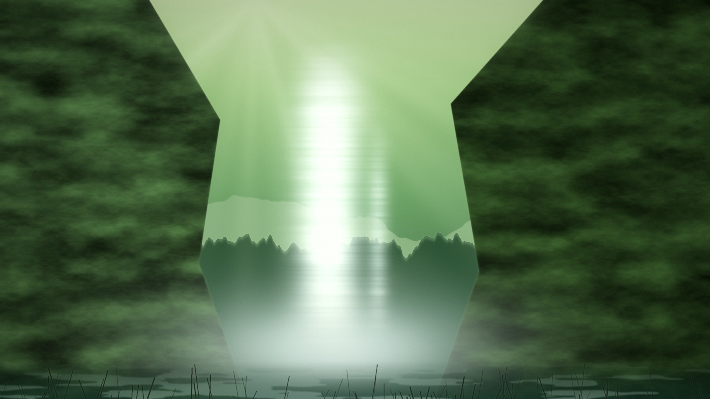

東鄉湖 夜明け前Lake Togo, before dawn浦富海岸 夜の波Uradome Coast at night鳥取砂丘 月夜の馬の背Tottori Sand Dunes, moonlit鳥取砂丘 砂嵐Sandstorm over the dunes三德山三佛寺 投入堂Nageire-do, Mt. Mitoku大山 暁の黄金Mt. Daisen at daybreak白兔海岸 夕日の鳥居Hakuto Coast, sunset torii

雨瀧 光の滝Amedaki Falls大山 雪の朝Mt. Daisen in snow境港 水木しげるロードMizuki Shigeru Road, Sakaiminato中海 雷鳴Nakaumi, thunder皆生溫泉 荒波の海岸Kaike Onsen shore鳥取砂丘 黄金の日の出Sunrise over the dunes若櫻鐵道 夏雲の田園Wakasa Railway倉吉 白壁土蔵群Kurayoshi white-wall storehouses大山 天の川Milky Way over Daisen賀露港の朝Karo Port at dawn